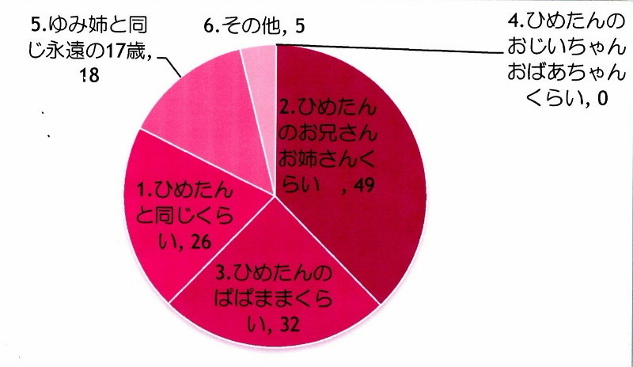

| 2012/07 02 Mon | ひめたん大図鑑２０だよ（2012 年２月）＋ひめきゅんさん図鑑 |
448
 『日芽香→ひめたん』なのに
『日芽香→ひめたん』なのに
『日芽香→ひめたん』なのに
『すず香→すずたん』じゃないのはなんでだろう？
逆に『すず香→すぅ』なのに『日芽香→ひぃ』じゃないのはなんでだろう？
それはずばり名付け親が違うからでしょう(〇-〇)/
↑某人気アニメの学級委員長の真似です伝わるカナ？
ひめたんって付けたのはすうで、
すうって付けたのは...。
あれ？誰だ？すうってあだ名いっちゃん初めに付けたの誰ー？
449
節分だね。メンバー同士で豆まきしたりしないの？
節分だね。メンバー同士で豆まきしたりしないの？
豆まきしたいー♪
けどスタジオのお掃除が大変なことになりそうなので遠慮しとこっかな。
450
ひめたんは楽しみは最後にとっておく方？それとも先に楽しむ方？
ひめたんは楽しみは最後にとっておく方？それとも先に楽しむ方？
何だかんだで最後(*^_^*)!
451
はい、重要な事なのでもう1度書きます
はい、重要な事なのでもう1度書きます
スケートのやつ何て言ったか教えてwww
↑しつこい？
答えるまで書き続けるし
↑うざい？
でも気にしない
しつこくないしうざくないけど
むしろ気になってくれるのはめっちゃ嬉しいけど
やっぱり恥ずかしいから言わない(*/ω＼*)うん
あのセリフは下北FMオンエア終了とともに封印したんだから
お願い掘り出さないでー!!!
452
PVのダイジェスト盤みたよ!
PVのダイジェスト盤みたよ!
ひめたんのオススメは誰のPV？
みんな可愛かったーけど個人的に
ななみん
（橋本奈々未chan）のPVにハマりすぎたー!!!
可愛かったで賞は
さゆにゃん
（井上小百合chan）かな(*ymy*)
囲みに
いこまっち
（生駒里奈chan）のPVの「いこまりな!」の物真似したら
似てるーって評判でーした。
453
日芽香サンプラーはどこに行けば買えますか？ｗ
日芽香サンプラーはどこに行けば買えますか？ｗ
日芽香サンプラーは恥ずかしいので、世の中に出回らないよう
これもまた封印しました。
わら
454
ひめたんのあれさぁ、商品化しちゃえば？？？
ひめたんのあれさぁ、商品化しちゃえば？？？
えーそんなー(>_<)
売れ残りすぎてひめたんが買い取るはめになるのが目に見えてるからー。
455
メンバーはＣＤ貰うんだろうけど、ひめたんは自分でも買いますか？
メンバーはＣＤ貰うんだろうけど、ひめたんは自分でも買いますか？
もう、予約とかしましたか？
らえるもんなんですかね？自分では買う気でいるんだけどね
ままーもう予約したー？
ちなみにひめたんの個人PVが入っているのはCD+DVD盤Type-A
456
 今、東京駅の京葉ストリートで【八天堂】（広島みはら）の、
今、東京駅の京葉ストリートで【八天堂】（広島みはら）の、
今、東京駅の京葉ストリートで【八天堂】（広島みはら）の、
クリームパンを買いました。会社で食べます。
ここ、有名なお店ですか？
広島人ほど広島みやげに疎いって言いますからねー
ごめんなさいひめたんの知識不足です('・ω・`)
そっかーこの前東京駅で、広島みやげの看板があったのは
そのクリームパンだったのかー。
よし。買うしか!
457
 ひめたんって料理できたり、お菓子作れたり女子力高いの？(=^ェ^=)
ひめたんって料理できたり、お菓子作れたり女子力高いの？(=^ェ^=)
ひめたんって料理できたり、お菓子作れたり女子力高いの？(=^ェ^=)
料理・お菓子作り・お裁縫...。
できないなりにどうにか頑張るのがひめたんです♪
なんちゃって女子力(`・ω・)どや
458
いまからでも、ひめたんにはまっちゃっていいとも？？
いまからでも、ひめたんにはまっちゃっていいとも？？
いいともどころか
めっちゃ嬉しいともー(o>ω<o)!!!
459
ひめたんの好きな男性の体型は？
ひめたんの好きな男性の体型は？
細身、細マッチョ、マッチョ、その他でよろしく！
ひめたん体型も顔もぶっちゃけ気にしない人だからなーあ。
あえて言うならお姫様だっこできそうな、細マッチョ・まっちょ!
460
日芽香ちゃんが前に載せた手作りカレンダーの
日芽香ちゃんが前に載せた手作りカレンダーの
２月度のってありませんか？？
カレンダー広島のお家に飾られてるんですよー。
急いで送ってもらって仕上げますね
ほしみなちゃん
(星野みなみchan)の誕生日までには完成させますので
しばしお待ちをー(＾ロ＾;
ちゃんと使ってもらえてて嬉しい！
461
ひめたんはPerfumeの３人なら誰推しですか？
ひめたんはPerfumeの３人なら誰推しですか？
ちなみに僕はかしゆかです。
３人とも素敵すぎて好きすぎて
１人に絞ってると熱が出そうです('・ω・`)
かしゆかさんかわいいですよねー♪
love the world のかしゆかさんが歌う大サビが好きすぎる!
はーいそしてこちら
ひめきゅんさん図鑑!
Q2.失礼ですが...何歳ー？
ひめきゅんさんの世代は幅広いのねー感動！
みんな大好きよーありがとう＼(^O^)／

ひめたん(*´・ω・*)
コメント(64)
2012/07/02 22:30